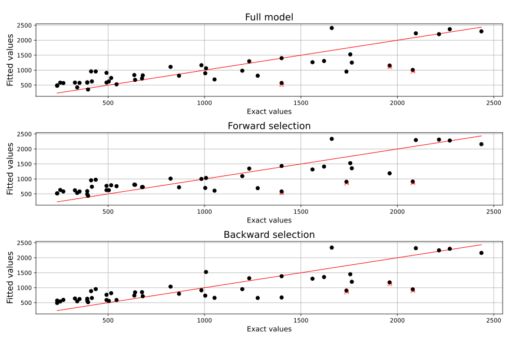
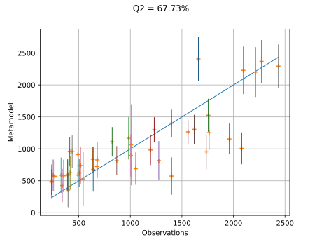

The Linthurst data set¶
Introduction¶
We consider the Linthurst data set, which contains measures of aerial biomass (BIO) as well as 5 five physicochemical properties of the soil: salinity (SAL), pH, K, Na, and Zn. The data set is taken from [rawlings2001] table 5.1 page 63.
References¶
API documentation¶
- class Linthurst
Data class for the Linthurst data set.
We consider the Linthurst data set, which contains measures of aerial biomass (BIO) as well as 5 five physicochemical properties of the soil: salinity (SAL), pH, K, Na, and Zn. The data set is taken from [rawlings2001] table 5.1 page 63.
- Attributes:
- data
Sample The data set.
- data
Examples
>>> from openturns.usecases import linthurst >>> ds = linthurst.Linthurst() >>> print(ds.data[:5])
Examples based on this use case¶

Perform stepwise regression

Compute confidence intervals of a regression model from data
Compute confidence intervals of a regression model from data